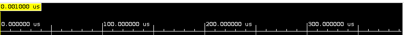
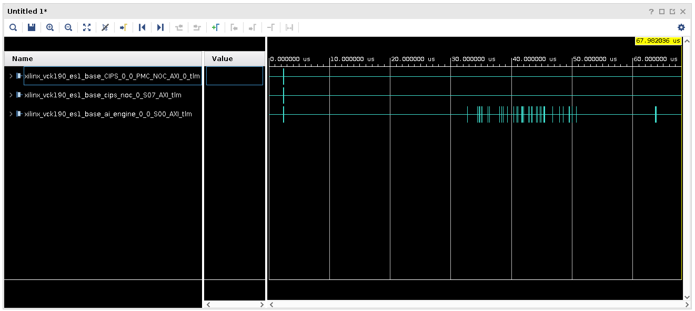
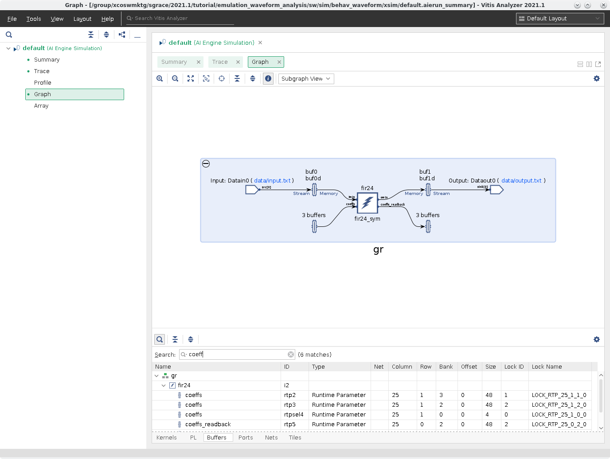

AI Engine DevelopmentSee Vitis™ Development Environment on xilinx.com See Vitis™ AI Development Environment on xilinx.com |
Versal Emulation Waveform Analysis¶
Version: Vitis 2022.1
Introduction¶
Simulating a complete system in the Vitis™ unified software platform allows for a near-hardware run of a design without the hardware, and has the added benefit of detailed waveform analysis during hardware emulation to identify issues in the programmable logic (PL), AI Engine interfaces, and memory read/writes that might be harder to debug on hardware.
This tutorial demonstrates how you can use the Vivado logic simulator (XSIM) waveform GUI, and the Vitis analyzer to debug and analyze your design for a Versal® ACAP. It steps through the process of building a design for hardware emulation, launching emulation with waveform viewing, and detailed information on how to read the waveforms, as well as using the Vitis analyzer to continue the analysis with generated trace output waveforms and data.
It is strongly recommended to go through the Versal Integration tutorial and the Versal System Design Clocking tutorial before running this tutorial.
IMPORTANT: Before beginning the tutorial make sure you have read and followed the Vitis Software Platform Release Notes (v2021.2) for setting up software and installing the VCK190 base platform.
Before starting this tutorial run the following steps.
Source VITIS and XRT.
Set the AIE License.
Set up your platform by running the
xilinx-versal-common-v2022.1/environment-setup-aarch64-xilinx-linuxscript as provided in the platform download. This script sets up theSDKTARGETSYSROOTandCXXvariables. If the script is not present, you must runxilinx-versal-common-v2022.1/sdk.sh.Set up your
ROOTFS, andIMAGEto point to thexilinx-versal-common-v2022.1directory.Set up your
PLATFORM_REPO_PATHSenvironment variable based on where you downloaded the platform.
Objectives¶
After completing this tutorial you should be able to:
Use XSIM as a live waveform viewer to view signals to and from the AI Engine including stream data and run-time parameters (RTP).
Read/understand Transaction Level Modeling (TLM) information in a waveform.
Use the Vitis analyzer to read trace and profile data.
Tutorial Overview¶
Design Overview¶
The design is a simple FIR filter that takes in random noise generated by the PL kernel, random_noise, and gets asynchronous RTP updates to the AI Engine to update the FIR filter coefficients. To confirm the coefficients are applied, the host code reads back the coefficients.
Transaction Level Modeling¶
Transaction level modeling (TLM) models Control Interfaces and Processing Systems (CIPS), Network on Chip (NoC), and AI Engine blocks, using SystemC, to show transaction-level communication in the waveform. It is cycle-approximate modeling. It can provide high-level information such as the address and data of the transactions to/from DDR memory or a specific PL kernel.
In the following diagram, the CIPS, NoC, and AI Engine are modeled in SystemC.

Steps¶
Step 1: Building the Design
Step 2: Launching Emulation with the XSIM Waveform GUI
Step 3: Using XSIM Waveform GUI and QEMU
Step 4: Using Vitis Analyzer
Step 1: Build Design¶
To build the design run the following commands.
make aie
After the ADF graph is compiled, run the AI Engine simulator (
aiesimulator) to get additional profile data. This ensures the design is simulating correctly and generates extra profile information for performance analysis and optimizing the kernels.To run the simulator, run the following commands.
make aiesim
After running emulation a new directory,
aiesimulator_output, is created and inside this directory, there is a file calledaiesim-options.txt.Open the
aiesim-options.txtand you should see content similar to the following.AIE_PKG_DIR=/path/to/<tutorial>/./Work AIE_DUMP_VCD=tutorial AIE_PROFILE=All
Close the text file.
NOTE: To view all the
aiesim_option.txtvalues, see Reusing AI Engine Simulator Options.Run the rest of the build process using the following commands.
make kernels make xclbin make host make package
Step 2: Launching Emulation with XSIM Waveform GUI¶
After the building and packaging of the design is complete you can run hardware emulation on your design. Ensure that launch_hw_emu.sh is in the sw directory.
To launch emulation with the XSIM Waveform GUI run the following command.
./launch_hw_emu.sh -g -aie-sim-options ../aiesimulator_output/aiesim_options.txt
OR
make run_emu
OR
You can include more options during emulation launch to see transactions logs as mentioned below:
To see all the transactions generated by PS (QEMU) to either PL/AIE, set env variable
ENABLE_RP_LOGS=true. You can see the logs at sim/behav_waveform/xsim/rp_log.txt. Note that PS to DDR transactions cannot be seen here as QEMU has a backdoor direct connection into DDR buffer.To capture AIE transaction logs generated at runtime, set the env variable
ENABLE_AIE_DBG_TRACE.
You can see the logs created in the folder aie_log/ e.g. sw/sim/behav_waveform/xsim/aie_log/S00_AXI.log file. This helps to debug the AIE systemC models only and contains transaction information per interface at each simulation cycle.At launch emulation, you can pass
-xtlm-aximm-logswitch. This logs all the transactions generated from CIPS to AIE or PL that is captured in xsc_report.log file e.g. sw/sim/behav_waveform/xsim/xsc_report.log./launch_hw_emu.sh -g -aie-sim-options ../aiesimulator_output/aiesim_options.txt -xtlm-aximm-log
The terminal shows the following.
Starting QEMU - Press <Ctrl-a h> for help Waiting for QEMU to start. running directly on console QEMU started. qemu_pid=3208 Waiting for PMU to start. qemu-system-aarch64: -chardev socket,path=./qemu-rport-_pmc@0,server,id=ps-pmc-rp: info: QEMU waiting for connection on: disconnected:unix:./qemu-rport-_pmc@0,server PMC started. pmc_pid=3243 qemu-system-aarch64: -chardev socket,id=pl-rp,host=127.0.0.1,port=7043,server: info: QEMU waiting for connection on: disconnected:tcp:127.0.0.1:7043,server XSIM started. xsim_pid=3300
This shows QEMU starting and launching XSIM. Note that QEMU and XSIM are linked together, meaning closing one closes the other. The use of the
-gflag opens up the XSIM Waveform GUI as shown in the following image with two config files (.wcfg and Untitled1).Users can keep any of the one file (preferably close .wcfg file) to contiunue adding signals or creating wavegroups for waveform analysis.
In this view you can select the signals you want to watch from the Scope and Objects views.
In the Tcl Console at the bottom of the view, run the following command.
source ../../../../tcl/add_waveforms.tcl
The
add_waveforms.tclfile removes any default signals provided by the simulation environment, and adds in all the signals you want to view. There are some signals that are important to have such as: NoC, DDR memory, PL Kernel, and CIPS signals. Your design interacts with these components, and being able to trace signal changes from CIPS to the NoC to/from DDR memory, and then to your design can prove helpful in debugging any potential issue with data transfers. This file contains the following.## Remove all waveforms before adding new ones remove_wave -of [get_wave_config] [get_waves -of [get_wave_config] -regexp ".*"] ## Set the appropriate paths based upon the platform being used set scope_path "/xilinx_vck190_base_wrapper_sim_wrapper/xilinx_vck190_base_wrapper_i/xilinx_vck190_base_i" ## Create a wave group called CIPS and add all signals for the CIPS_0 to it set CIPS [add_wave_group CIPS] set cips_intf [get_objects -r $scope_path/CIPS_0/* -filter {type==proto_inst}] add_wave -into $CIPS $cips_intf ## Create a wave group called NOISE and add all signals of the random_noise_1 to it set NOISE [add_wave_group NOISE] set noise_intf [get_objects -r $scope_path/random_noise_1/* -filter {type==proto_inst}] add_wave -into $NOISE $noise_intf ## Create a wave group called S2MM and add all signals of the S2MM kernel to it set S2MM [add_wave_group S2MM] set s2mm_intf [get_objects -r $scope_path/s2mm_1/* -filter {type==proto_inst}] add_wave -into $S2MM $s2mm_intf ## Create a wave group called CIPS_NOC and all signals of the CIPS NoC to it set CIPS_NOC [add_wave_group CIPS_NOC] set cips_intf [get_objects -r $scope_path/cips_noc/* -filter {type==proto_inst}] add_wave -into $CIPS_NOC $cips_intf ## Create a wave group called DDR4 and all signals to/from DDR4 set DDR4 [add_wave_group DDR4] set ddr4_intf [get_objects -r $scope_path/noc_ddr4/* -filter {type==proto_inst}] add_wave -into $DDR4 $ddr4_intf ## Create a wave group called AIENGINE and all signals of the AI Engine block to it set AIENGINE [add_wave_group AIENGINE] set aie_intf [get_objects -r $scope_path/ai_engine_0/* -filter {type==proto_inst}] add_wave -into $AIENGINE $aie_intf
NOTE: This file can be executed automatically from the
launch_hw_emu.shcommand by using the-user-pre-sim-script add_waveforms.tcl.IMPORTANT: Add all the signals you need before starting emulation. If, after starting emulation, you pause it and add more signals there will not be any data for the new signals.
You will see a waveform view as shown in the following.
Expand the all signal groups in the view to get the following view.
The tutorial design runs very fast and you will not be able to see anything meaningful on this small scale.
Adjust the scale to 100 us.

TIP: The scale can be adjusted when emulation is running to fit your needs.
NOTE: For more information about this simulator view and how to use it, see the UG900 Vivado Design Suite User Guide: Logic Simulation.
Step 3: Using XSIM Waveform GUI and QEMU¶
A great benefit of having a waveform viewer showing live data is so you can see how the signals interact with each other. This includes the programming of the AI Engine and device traffic to/from the DDR memory, traffic to/from the PL kernels, as well as seeing RTP data being written to the AI Engine.
Click the Run All button ().
Click back to the terminal where
./launch_hw_emu.shwas launched. Notice that the QEMU instance has begun booting and when you see the following messages QEMU has finished launching.root@versal-rootfs-common-2021_1:~## Enabling notebook extension jupyter-js-widgets/extension... - Validating: OK xinit: giving up xinit: unable to connect to X server: Connection refused xinit: server error [C 17:53:36.686 NotebookApp] Bad config encountered during initialization: No such notebook dir: ''/usr/share/example-notebooks''IMPORTANT: Ignore the messages above.
Hit Enter a few times to clear these messages and you should see this prompt.
root@versal-rootfs-common-2021_1:~#
Type in the following commands to launch the tutorial application.
export XILINX_XRT=/usr cd /mnt/sd*1 ./host.exe a.xclbin
NOTE: This might take some time to complete because hardware emulation is collecting profiling data as well as Value Change Dump (VCD) data.
Navigate back to the XSIM Waveform GUI and notice that signals are toggling. Scroll up and down to see all the signals that are starting to display data.
Pause the execution of the design when you see all signals in the view stop toggling.
Exploring the Waveforms¶
One of the things the waveform viewer can help with is figuring out the order in which data is transferred from a source to a destination. In the following sections you can see how to explore the various waveforms specific to certain communication/data transfer.
NOTE: If AI Engine kernels contain printf statements, the output will show up in the XSIM Waveform GUI in the Tcl Console and will be written to the simulate.log file after emulation is closed.
Checking Proper Boot-up Using PMC¶
The first key step to ensure emulation is operating correctly is making sure that the PS is able to program the platform management controller (PMC). This system is responsible for booting and configuring the device. Seeing the signal through the CIPS, NoC, and the AI Engine is a sign that things are operating normally.
To see this signal only run the following Tcl script.
source ../../../../tcl/bootup_signals.tcl

Zoom in to the first transactions by clicking and dragging the mouse from the upper left to the bottom right. You should see something like the following.
Expand these signals and notice that the NoC and the CIPS signals are all matched. This is showing that the CIPS is transferring configuration information to the PMC. These signals are TLM signals, because the blocks of the device they are targeting are modeled in SystemC. In this view, a wide colored block might not be one transaction (because it is a us timescale), so zoom in and notice there are more transactions occurring in a short amount of time.
Looking at the last interface, xilinx_vck190_base_ai_engine_0_0_S00_AXI_tlm, the majority of the transactions are writes, and are configuring the AI Engine to the graph created in Step 1. These writes are specific to the Configuration Data Objects (CDO) that are commands that are passed to the PLM to configure the device, and in this interface, the AI Engine.
Zoom the window to full by clicking the mouse on the lower right side, and drag to the upper left.
Transactions generated by PS (QEMU) to PL/AIE¶
Users can see the logs at : sim/behav_waveform/xsim/rp_log.txt. Note that PS to DDR transactions cannot be seen here as QEMU has a backdoor direct connection into DDR buffer.
PL to AI Engine¶
After bootup and the device is configured, the application can begin to run. In this design, there is a PL kernel called random noise that is generating data that is being fed directly into the AI Engine. The key here is looking at the s_axi_control interface to see when the PS sends the run signal.
To view the specific signals controlling the PL kernel, run the following.
source ../../../../tcl/pl_to_aie.tcl
Expand the CIPS group down to the Row 0. Zoom into a specific region. In the following screenshot the red area is the zoom region.
After the zoom in, you should see something similar to the following.

Here you can see the PS is using the Full Power Domain (FPD) interface to send the AXI signal to turn on. Notice that there are two blocks shown. This is the PS telling the
random_noiseands2mmkernels to start running.If you zoom in more, you can see more specifics of the transactions.
Notice that the
s_axi_controlhas a read transaction slightly after the second transaction has started of the FPD interface.Expand the xilinx_vck190_base_CIPS_0_0_M_AXI_FPD_tlm interface and the Outstanding Reads and you will see a Row 0. If you move the mouse over the #3 or #4 a context help menu shows you some signal information on where data is being transfered. Notice the
ARADDRvalue of0xa4060000for #3 and0xa4050000for #4, and understand that this is the address to the PL kernels that the Vitis linker auto-assigns it during linking. From the host code, you can determine that these kernels are activated before the AI Engine, soon after the application starts, so it is safe to say these signals are used to start them. Do remember that these kernels are simpler than others; more complex kernels will result in different transactions.Zoom to fit by clicking the Zoom Fit button (
 ). Expand the NOISE group and expand Out_r.
). Expand the NOISE group and expand Out_r.Notice after the
random_noisekernel starts, you see the large green-line. This is a series of many transactions of the PL kernel transferring data to the AI Engine. There are a few red sections in the waveform. This is a link stall, or where the kernel has been stalled and is caused by the AI Engine.Zoom to fit by clicking the Zoom Fit button.
AI Engine RTP Signals¶
As mentioned in the Overview this design is sending RTP values to the AI Engine through the graph.update() host application. From the host code, you can see that there are two updates being done, both with an array size of 12. Because these only apply to the AI Engine kernel, these will write signals to the AIENGINE/S00_AXI interface. However, there are other signals that show the same values because these are the interfaces the data traverses to the destination.
Run the following Tcl script to see only the AI Engine signal.
source ../../../../tcl/rtp_signals.tcl
Expand the AIENGINE group, xilinx_vck190_base_ai_engine_0_0_S00_AXI interface, and expand the Outstanding Writes. You will see some write transactions; go to the second visible instance shown in the following.

Zoom into the transaction of writes until you can see something similar to the following screenshot.

NOTE: Depending on the time the host application runs you will not see the exact same times.
Here you can see that there are 12 writes that are being sent to the AI Engine which are the RTP coefficients that are to be updated in the design.
Expand Row 0 and hover the mouse over #262 where it says Data and you will see a pop-up as shown in the following.

You can see that there is data presented here. It is in the radix of hexidecimal, and reads
0xB4. Converting this to decimal is180, which is the first coefficent in the area for updates.TIP: There are two RTP updates occurring. If you follow the same write signal, you will find the write transactions for the second update.
Click the Zoom to Fit button.
AI Engine to PL to DDR Memory¶
After the RTP update has been sent, you can start to see output data being written to DDR memory. In this design, the AI Engine is sending data from the S00_AXIS interface and getting it to the s2mm kernel. This kernel is a FIFO written in HLS and is used to write the output to DDR memory.
To view these signals run the following.
source ../../../../tcl/aie_to_ddr.tcl
You should see something similar to the following.

As you can see, the transactions in green are slightly ahead of the tan. This means those signals are going first. The data path is the AI Engine kernel, to the interface tile, then to the AIENGINE/M00_AXIS interface. Notice how AIENGINE/M00_AXIS and S2MM/s interfaces are matched, meaning they are connected together. The same applies to the S2MM/m_axi_gmem and the DDR4/S00_AXI interfaces on the noc_ddr4 IP.
After the data is stored into DDR memory, the host application can then access it.
Expand the CIPS_NOC group. Notice that the last transactions on the cips_noc_0_M00_AXI_tlm and the cips_noc_0_S00_AXI_tlm interfaces as following. This is the host application reading the data that was stored by the
s2mmkernel.Zoom in and you should see the following.
When emulation is finished, close the XSIM GUI, which closes the QEMU and the emulation. Discard the waveform at the pop-up prompt.
Navigate back to the terminal that launched emulation.
Limitations¶
Note the following limitations of the waveform viewer.
Signals internal to the AI Engine can be viewed using VCD. They are not integrated in the general XSIM Waveform GUI.
CIPS (QEMU model) which executes the software program is purely a functional model with no timing accuracy. The NoC, DDR memory, and AI Engine are cycle-approximate models.
Bandwidth and latency estimation are approximate, based on the accuracy of the individual IP models.
Step 4: Using Vitis Analyzer¶
After emulation is complete, you can look at the profiling and VCD trace data that was also generated at the same time. Note that if profiling and VCD signal features are not used, emulation runs faster.
Using the XSIM Waveform GUI to view waveforms is powerful in allowing you to see the data path and flow of the design, as well as debug potential issues like a hang. However, this will only show the programmable logic side of the system. To investigate the AI Engine signals, you need to use the VCD trace in the Vitis analyzer. To use the Vitis analyzer, open up a .aierun_summary file.
Open the run summary of the design by running the following command.
vitis_analyzer sw/sim/behav_waveform/xsim/default.aierun_summary &When the summary is open, you should see something similar to the following.

Here you can see various reports: Summary, Trace, Profile, Graph, Array. Click on Trace to open up the VCD data that was collected during hardware emulation.
Here you can see the inner traces of the graph through a tile hierarchy. Selecting a net, tile, function, or any object in this view will cross-select to various views. This can help with identifying specific nets and functions.
Open the Graph view and click on the Buffers tab.
To find the RTP buffers, click on the search button (
 ) and type in
) and type in coeffs.You should see a window like the following.

Select the three
coeffsbuffers, and click the Trace view again, and see that the lock signals are highlighted.
If you scroll up you can see that the FIR filter kernel begins to process data soon after the RTP is read.
Open up the Profile report and see specific information about the kernel and the tile it is placed in.

Click on Total Function Time and see the following:

This information is useful because it helps determine how long the kernel runs and can be used with the Trace to help determine if kernels are running optimally, or if there are stalls.
Close the Vitis analyzer.
Summary¶
In this tutorial you have learned:
To read the waveform viewer to follow data flow pathing for a simple Versal design.
To add/remove signals to the XSIM viewer to look at specific signals such as, NoC, DDR memory, PS, AI Engine.
View TLM signals and how they interact with the AI Engine and Versal blocks.
Open and view Trace and Profile info in Vitis Analyzer.
Licensed under the Apache License, Version 2.0 (the “License”); you may not use this file except in compliance with the License. You may obtain a copy of the License at
http://www.apache.org/licenses/LICENSE-2.0
Unless required by applicable law or agreed to in writing, software distributed under the License is distributed on an “AS IS” BASIS, WITHOUT WARRANTIES OR CONDITIONS OF ANY KIND, either express or implied. See the License for the specific language governing permissions and limitations under the License.
XD067 | © Copyright 2021 Xilinx, Inc.